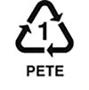

Common Questions About Recycling In Montana, What Can I Recycle?
Montana recycles mostly plastic, batteries, metal, cardboard, paper, glass, electronics, and automotive parts. Most things are safe to recycle such as metal, paper and
glass, but some other recycables, such as plastics, are harder to recycle. This is because not all plastics are recycable. Below will list each type of material
and a little bit of information in each that is recycable in Montana, and filterable in the Map.
The types of materials that can be recycled in Montana, and that are able to be filtered on our map, include:
- Plastic
- Batteries
- Metal
- Cardboard
- Paper
- Glass
- Plastic Bags / Film / Wrap
- CFLs & Tubes
- Wood & Lawn Waste / Kitchen Compost
- Cooking Oil
- Electronics
- Automotive Fuilds & Waste Water
- Tires
- Vehicles
Plastics:
Polyethylene Terephthalate (PETE or PET)
Recycling Number: 1
Symbol: PETE

Recyclable: Yes
High-Density Polyethylene (HDPE)
Recycling Number: 2
Symbol: HDPE

Recyclable: Yes
Polyvinyl Chloride (PVC)
Recycling Number: 3 PVC
Symbol: PVC

Recyclable: Yes - but call your recycler
Low-Density Polyethylene (LDPE)
Recycling Number: 4 LPDE
Symbol: LPDE

Recyclable: Yes - but call your recycler
Polypropylene (PP)
Recycling Number: 5
Symbol: PP

Recyclable: No
Polystyrene or Styrofoam (PS)
Recycling Number: 6 PS
Symbol: PS

Recyclable: No
Miscellaneous plastics
Recycling Number: 7
Symbol: Other

Recyclable: No
- Back to top
Batteries:
There are two main types of household batteries, primary
(AA, AAA, C, D, 9-volt, and 6-volt) and secondary (rechargeable).
There is no current option for recycling alkaline batteries
in Montana. Alkaline batteries can be safely discarded in the
trash in small quantities. Rechargeable batteries
can be safely disposed of through any Radio Shack or Home Depot.
Primary Batteries:
- AA (Most common)
- AAA
- C
- D
- 9-Volt
- 6-Volt (Lanterns / pet safety)
- 3-Volt (Car key / watch)
Secondary Batteries:
- Nickel-Cadmium (Ni-Cd) (Most rechargeable batteries)
- Nickel Metal Hydride (Ni-Mh) (Another kind of rechargeable)
- Lithium Ion (Li) (Phones / computers)
- Back to top
Metals:
Most all types of metals can be recycled in Montana, even
vehicles can be recycled and scrapped for parts!
Common Recyclable Metals:
- Aluminum
- Brass
- Copper
- Steel / Carbon Steel / Alloy Steel
- Cast Iron / Wrought Iron
- Bronze
- Tin, Lead
- Titanium
- Precious Metals - Gold, Silver, Platinum
- Back to top